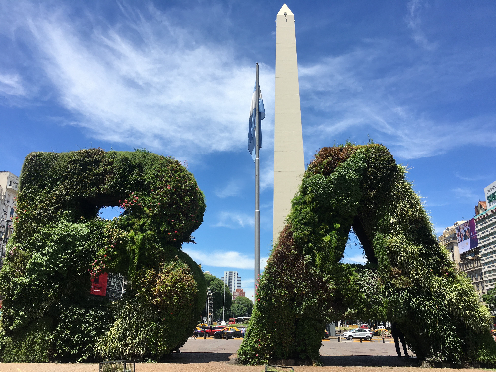
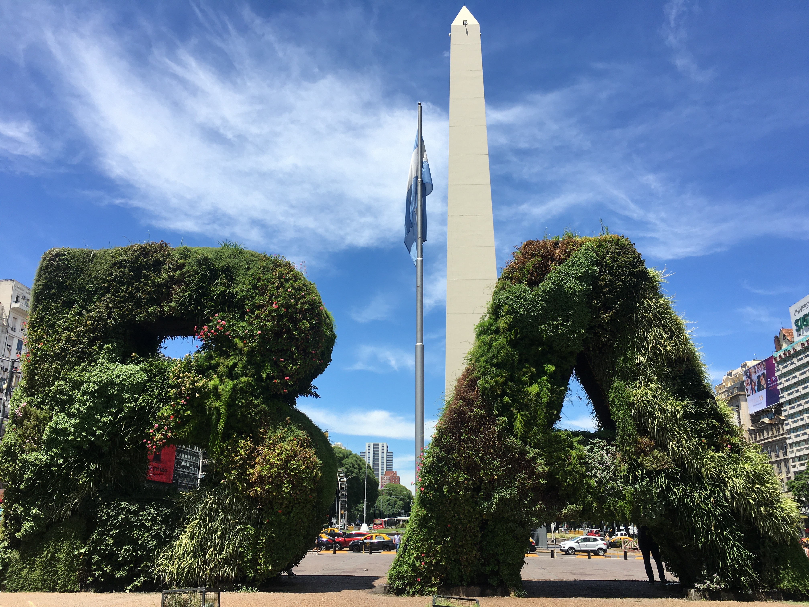

Galeria de Fotos


Acordamos e já fomos surpreendidos com a dona do hostel alertando sobre o horário do check-out. Como havíamos reservado apenas para uma noite, estávamos discutindo sobre ficar mais um dia no hostel, por ser muito barato e com ótima localização. Já era próximo do horário de check-out e ainda não havíamos decidido se ficaríamos ou não. Nesse instante, a funcionária chamou a nossa atenção para sairmos logo do quarto porque já haviam reservado. Por fim, decidimos procurar outro hostel. Por não ter algum mais próximo do centro, olhamos alguns hotéis, e por coincidência, o que nós achamos no aplicativo era o mesmo que se situava ao lado do hostel. Após estarmos instalados no Gran Hotel De La Paix, resolvemos procurar algum restaurante para almoçarmos. Andamos pela cidade durante à tarde e à noite. Fomos na Plaza del Congresso, no Obelisco e na Basilica Nuestra Señora de la Piedad. Voltamos para o hotel e descansamos.
No dia seguinte, visitamos vários lugares. Inicialmente, fomos ao Obelisco para tirar algumas fotos durante o dia, e depois fomos almoçar em um restaurante próximo do hotel, um lugar muito barato com uma comida de boa qualidade. Esperamos uma amiga que mora em BA há pouco tempo, para nos guiar pelos pontos turísticos. Visitamos a livraria ‘’El Ateneo’’, um espaço único, com uma bela arquitetura e uma imensidão de livros de todos os tipos. Em seguida, fomos ao Cemitério da Recoleta, outro lugar quase obrigatório para visitar. Outro lugar interessante para admirar a 2ª e 3ª Artes, o Museo Bellas Artes. Também fomos na Facultad de Derecho, Floralis Genérica. Retornamos para o Cemitério da Recoleta e visitamos a Basílica Nuestra Señora del Pilar e Nuestra Señora del Socorro.
Estávamos à procura do quadro Abaporu - Tarsila do Amaral, uma obra muito significativa e que representa a nossa identidade brasileira no contexto da arte. Ela estava localizada no Museo de Arte Latino-americana de Buenos Aires. Como faltava apenas meia hora para fechar, esperamos o ônibus na linha para chegar até lá. Estava demorando, então resolvemos entrar em um Museu próximo da linha de ônibus chamado Museo Nacional Ferroviario, o qual foi um achado. O funcionário-guia, que também atuava como segurança, nos apresentou toda a linha do tempo, as construções ferroviárias e todo o funcionamento daquela época, além de trazer muito conteúdo histórico e a passagem de todos os presidentes, principalmente o Perón, o qual é bem famoso em Buenos Aires.
No dia seguinte, nosso último dia na BA, deixamos nossos pertences no hotel e visitamos o Museo de Arte Latino-americana de Buenos Aires (MALBA) no período da manhã. Conseguimos a meia-entrada pois temos a carteirinha de estudante. É sempre bom levar a carteirinha do estudante, ou até mesmo o ID Jovem, que garante pagar pela metade do preço e ajuda bastante a frequentar vários eventos pagos. Mas a maioria dos museus são gratuitos, portanto, dá pra aproveitar muito! Para a nossa surpresa, não superou tanto as nossas expectativas, apenas o quadro Abaporu foi relevante. Havia uma exposição que estava de passagem com um contexto que nós consideramos inadequados, não tivemos tanta sorte naquele dia, kkkk.
Neste mesmo dia, fomos para a rodoviária de Buenos Aires. Nossa intenção inicialmente era pegar um ônibus para uma cidade mais próxima (Rosário) e seguir de carona até o Paraguai. Porém, era inviável, porque estávamos com o tempo reduzido e com dinheiro contado. Procuramos uma rota que seguia direto até Puerto Iguazú, cidade que faz fronteira com o Brasil e o Paraguai. O preço da passagem era quase a mesma para ir à Rosário, portanto, decidimos escolher a segunda opção. O valor era em torno de R$ 350,00. Compramos a outra passagem no cartão, o qual foi outro perrengue financeiro, pois havia custado o dobro (R$ 600,00). Nunca compre as coisas pelo cartão de crédito, pode custar bem mais do que o esperado, sempre tenha dinheiro trocado em mãos.
Após uma viagem longa e exaustiva (18 horas) de ônibus, chegamos em Puerto Iguazú.
Galeria de Fotos
